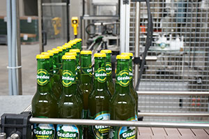
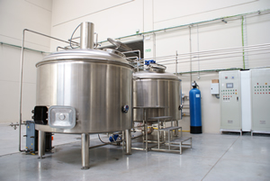

La primera cerveza artesana y natural de la Sierra de Gredos
Ahora puedes disfrutar de todo el sabor y propiedades de la mejor Cerveza Artesanal comprando desde tu Casa

Descubre Nuestra Cerveza, elaborada con la mejor malta y lupulos cuidadosamente seleccionados.

En nuestra fábrica elaboramos la cerveza artesana Gredos, siguiendo el método tradicional artesano de nuestros abuelos.